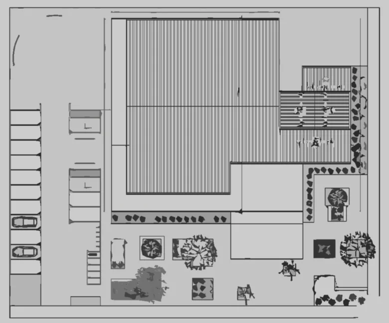

Publicado em:
O Que é um Croquis de Localização e Qual a Sua Importância em um Projeto

1. O que é um croquis de localização?
O croquis de localização é um desenho simples, geralmente feito em planta (vista de cima), que mostra a situação geográfica de um terreno ou edificação em relação ao seu entorno.
Ele não precisa ter o mesmo nível de precisão de uma planta técnica, mas deve indicar elementos que permitam localizar facilmente o lote ou obra, como:
- Ruas e avenidas próximas.
- Pontos de referência (praças, escolas, hospitais, comércios).
- Orientação (norte, sul, leste, oeste).
- Acesso principal ao terreno.
- Limites do terreno.
Em muitos casos, o croquis é solicitado junto ao projeto arquitetônico para aprovação em órgãos públicos, licenciamento de obras ou para consultas rápidas.
2. Diferença entre croquis de localização e planta de situação
- Croquis de localização: desenho mais simples, feito à mão ou em softwares básicos, que mostra como chegar até o terreno.
- Planta de situação: representação técnica em escala, obrigatória em projetos legais, que mostra a inserção do lote no tecido urbano.
Ou seja, o croquis é um esboço prático, enquanto a planta de situação é um documento técnico oficial.
3. Importância do croquis de localização em um projeto
O croquis de localização tem várias funções:
- Orientação rápida: facilita a identificação do terreno por clientes, fornecedores e profissionais envolvidos na obra.
- Apoio em aprovações: em muitos municípios, é exigido junto ao projeto para licenciamento de construção.
- Comunicação simples: traduz a informação técnica da planta de situação em um desenho mais fácil de interpretar.
- Registro documental: serve como referência para futuros estudos urbanísticos ou regularização do imóvel.
- Facilita visitas e inspeções: engenheiros, arquitetos, fiscais ou mesmo equipes de obra conseguem localizar rapidamente o endereço.
4. Elementos básicos de um bom croquis de localização
- Indicar ruas principais e secundárias.
- Apontar pontos de referência conhecidos (postos de combustível, igrejas, supermercados).
- Mostrar a orientação norte.
- Indicar número do lote, quadra e bairro.
- Representar o acesso ao terreno (entrada principal).
5. Requisitos comuns em processos oficiais
- Legibilidade: textos e setas claros, evitar excesso de detalhes.
- Assinatura e carimbo do responsável técnico quando exigido.
- Indicação de coordenadas ou referência ao sistema de endereçamento municipal quando disponível.
- Escala ou anotação da distância até ponto de referência, se necessário.
6. Boas práticas ao preparar um croquis
- Use cores ou hachuras para destacar o lote.
- Inclua uma pequena legenda com símbolos usados (norte, entrada, pontos de referência).
- Combine o croquis com fotos do local para facilitar a localização por terceiros.
- Mantenha uma versão digital (PDF/JPG) e uma impressa para vistorias.
👉 Veja também: O que São Normas de Construção e Por Que Cumpri-las